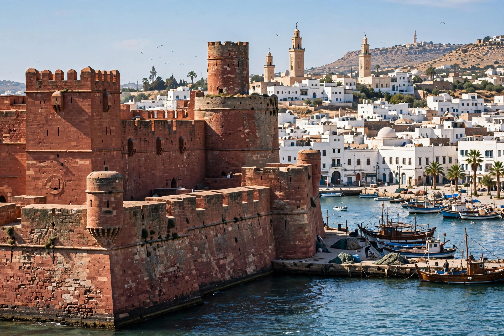

[Image placeholder: The Red Castle and Tripoli's harbour waterfront]| Country | Libya |
|---|---|
| Population | About 1.2 million (city); metro about 2.2 million |
| Name | From Greek Tripolis — the three cities Oea, Sabratha and Leptis Magna |
| History | Phoenician Oea; Roman, Arab, Ottoman, Italian and independent eras |
**Tripoli** is the capital and largest city of Libya, a port on the Mediterranean in the northwest of the country. Its name ('three cities') recalls the ancient Tripolitania trio of Oea (Tripoli itself), Sabratha and Leptis Magna. The old city (medina) wraps around the harbour beneath the Red Castle (Assaraya al-Hamra), with Roman remains — the Arch of Marcus Aurelius — Karamanli-era mosques and Italian colonial avenues beyond.
Tripoli was a Barbary corsair base bombarded by the young United States (the First Barbary War, 1801–05, which gave the US Marine hymn 'to the shores of Tripoli'), an Italian colony from 1911, and from 1969 the seat of Muammar Gaddafi's regime, centred on the Bab al-Azizia compound. The 2011 civil war ended with rebels taking the city in August; since then rival governments and militias have contested it, though it remains the seat of the internationally recognised Government of National Unity.
Tripoli sits on a fertile coastal plain (the Jifara) between the Mediterranean and the Nafusa Mountains escarpment. Martyrs' Square (formerly Green Square) is its central space; Tajura and Janzur form its eastern suburbs.